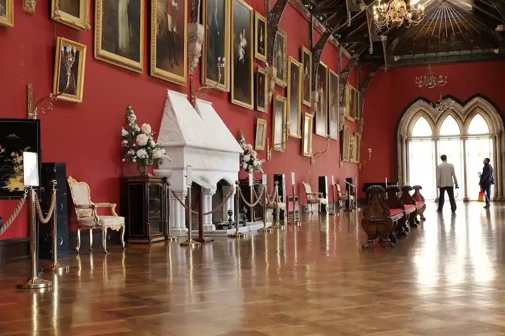
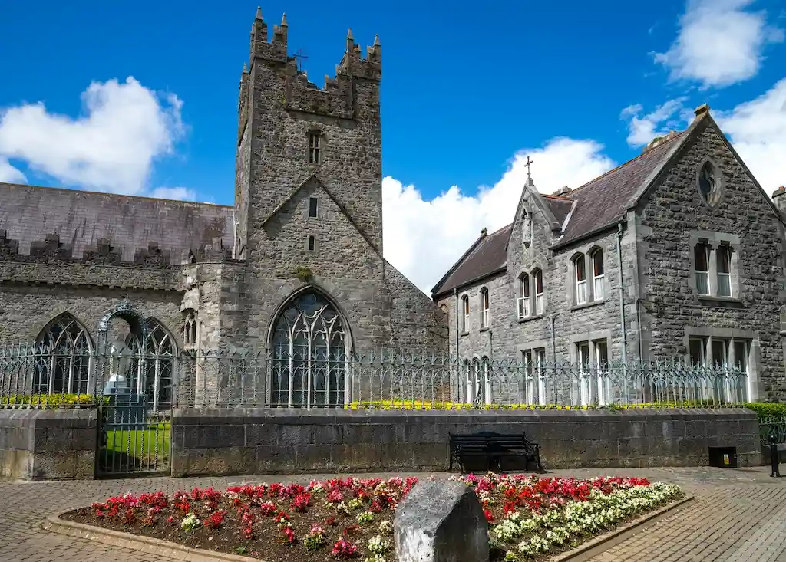
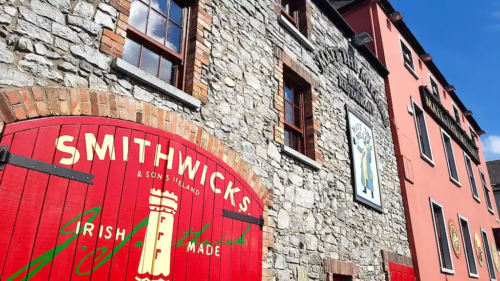
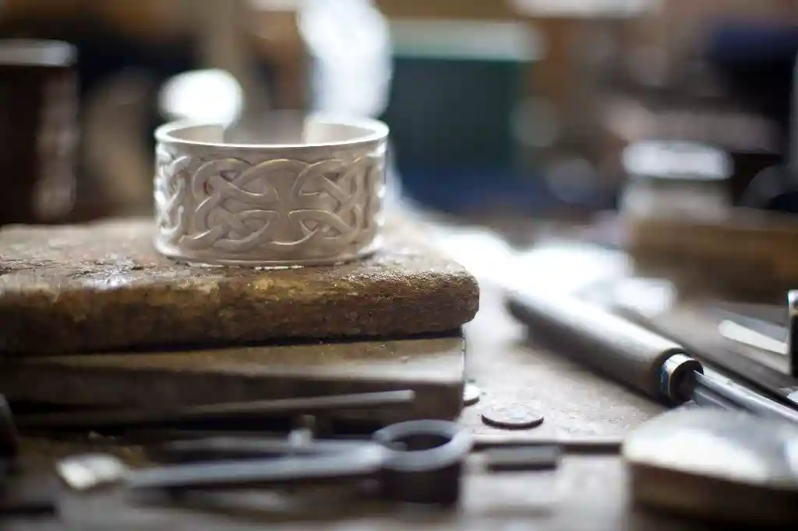

Kilkenny
Sumérgete en un mundo de intriga, magia y misterio en la ciudad de Kilkenny. Tenemos cinco sitios por donde empezar…
1. Empápate del ambiente de un castillo histórico
El majestuoso castillo de Kilkenny, situado en el río Nore, en el centro de la ciudad, no parece una ganga, pero lo es… o lo fue. El famoso castillo normando de Kilkenny perteneció a los Butlers de Ormonde durante casi cinco siglos, hasta que el sexto marqués de Ormonde lo donara a la ciudad de Kilkenny por solo 50 libras esterlinas en 1967. Un recorrido te llevará a la Pinacoteca y a la fastuosa biblioteca, con sus cortinas de damasco de seda rosado y paredes forradas de popelín de seda francés. ¿No te apetece hacer el recorrido? No pasa nada: tienes 500 años de historia condensados en una película de 12 minutos en la Sala Medieval de la torre sur del castillo, y es gratis. ¡Solo hay que pagar entrada para ver el resto del castillo!
2. Agarra un palo de hurling y haz como los lugareños.
Este antiguo juego irlandés tiene un largo vínculo con Kilkenny (“Go the Cats”). A menudo verás los colores del equipo del condado, negro y ámbar, ondeando en cada ventana y en cada coche que pasa. Si quieres conocer a fondo este deporte, no te pierdas el tour definitivo de hurling: The Ultimate Hurling Experience Tour. Con una calificación de cinco estrellas en TripAdvisor, el recorrido te ayuda a entender el juego de hurling, que el guía Jim Croke define como una “mezcla de hockey sobre hielo y asesinato”. Después de explicar brevemente las reglas, te llevará a un campo impecablemente cuidado, te entregará un auténtico palo de hurling de madera de fresno y la bola dura de cuero cosido, conocida como sliotar, para que pruebes. ¡Disfrútalo y buena suerte!
3. Disfruta del misterioso Kilkenny medieval
La Abadía Negra, construida en el siglo XIII, es un universo de serenidad a la luz de las velas. Cuenta con el mayor rosetón de su clase en Irlanda, que contiene la impresionante cifra de unas 10.000 piezas de cristal de rubí y zafiro y narra la historia de Jesucristo y su vida. A poca distancia de la Abadía Negra, se encuentra la Mansión y Jardines de Rothe, una casa Tudor restaurada que data del siglo XVI. Aquí los arqueólogos encontraron hace poco los restos de una residencia medieval más temprana (considerada la segunda vivienda del Abad de la cercana Abadía Duiske). La historia ha demostrado que este hombre vivió bastante bien: cenas a base de cisne y filetes, todo ello regado con su vino Burdeos favorito. Desde luego, tenía estilo. Sumérgete en 800 años de historia y visita el Museo de la Milla Medieval: está situado en el corazón de la ciudad y los lugareños lo describen como una experiencia “legendaria”.
4. Prueba la cerveza ale más antigua de Irlanda
Los orígenes de la Cervecera Smithwick nos retrotraen al año 1231, cuando unos cuantos monjes sedientos descubrieron la cerveza cuando trataban de purificar el agua. Avancemos 300 turbulentos años de leyes penales, guerras y pobreza, tras los cuales la cervecera acabó por fin en manos de la familia Smithwich. El resto, como se suele decir, es historia, y para el año 1800 su cerveza rubia ya se exportaba a muchos lugares del mundo. La historia de Smithwick’s se narra al completo en la Smithwick's Experience Kilkenny. Recorre la Cervecera St. Francis original, descubre la historia de la cerveza y termina saboreando una buena pinta. ¡Tendrás sed tras el largo recorrido por la historia!
5. Hazte artesano, al estilo irlandés
Hay artistas y artesanos que trabajan en talleres por toda la ciudad de Kilkenny. Nicholas Mosse, alfarero de renombre, crea sus elegantes piezas en la cercana localidad de Bennettsbridge y el Kilkenny Design Centre aglutina la venta minorista de la ciudad con su impresionante colección de joyas, artículos de punto, regalos celtas, porcelana, vidrio y alfarería. Y no te pierdas la Galería Nacional de Artesanía en Castle Yard, que albergó en su momento los establos y cocheras del castillo de Kilkenny, donde podrás ver a los alfareros en acción o ¡probar tú mismo!
 Si querés saber más, hacé click aquí¿A dónde querés viajar ahora?
Buscá ciudades, consejos o destinos de Irlanda